Придумал. Спроектировал. Собрал.
Месяц посвятил практической работе с ИИ-инструментами: тестировал разные подходы, собирал решения и доводил их до рабочего состояния. Итогом стали 6 готовых продуктов
Одна задача. Никаких лишних функций
Работая из дома, я постоянно забывал делать перерывы: вовремя размяться, отойти от компьютера или просто проверить гречку на плите. Мне нужен был небольшой таймер, который всегда под рукой, не мешает работе и позволяет запускать несколько отсчётов одновременно.
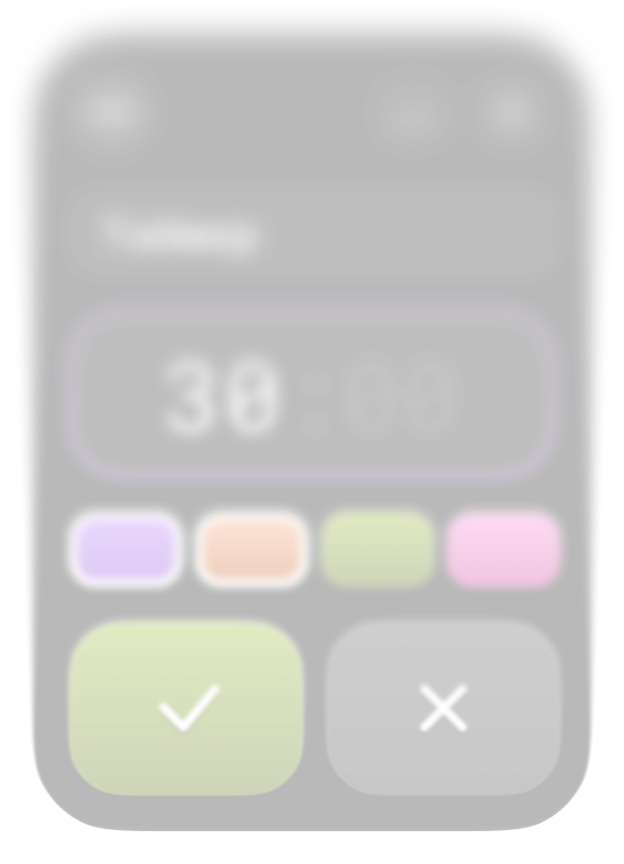
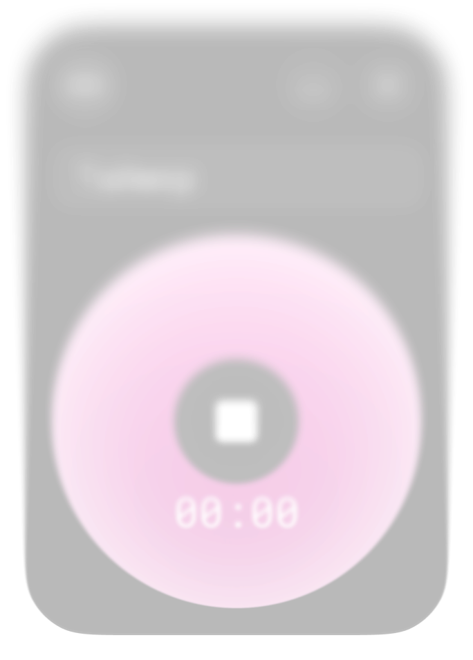
Несколько часов в Figma, долгие диалоги с Codex и немного борьбы с Windows — так появился Chicken Timer, мой первый самостоятельно собранный продукт.
Не обязательно спасать мир.
Иногда достаточно спасти папку Downloads
Десятки изображений, иконок, мемов и куча распакованных архивов. Раньше этот хлам я копил неделями и сортировал вручную. Теперь приложение AI Sorter делает всю работу за меня.
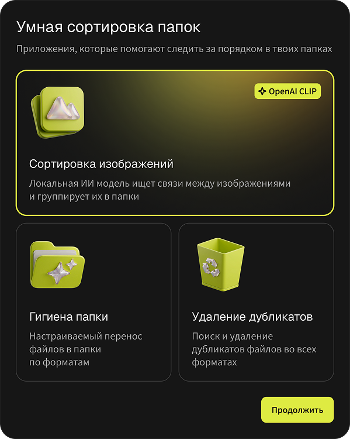
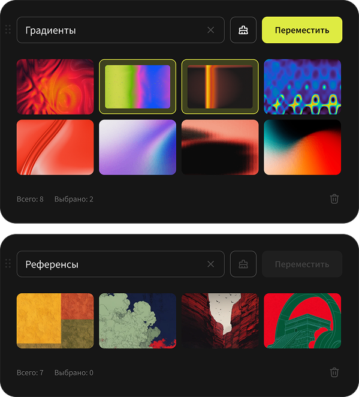
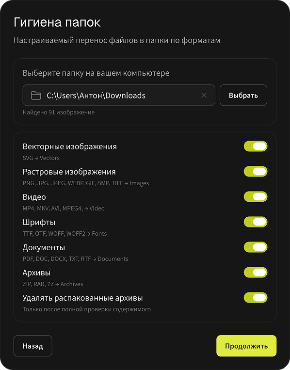
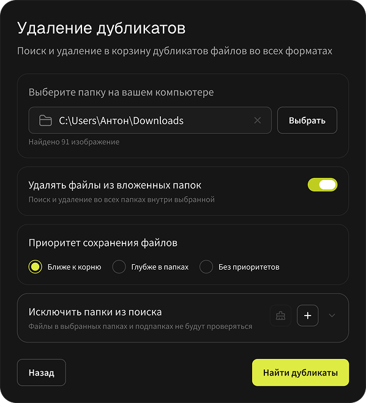
Три инструмента в одном приложении для наведения порядка в папках. Помогают быстро разобрать изображения, удалить лишнее и освободить место.
Локальная AI-модель анализирует изображения и предлагает сортировку. Можно вручную исправлять, переименовывать и добавлять группы, просматривать и удалять фото. Регулируя параметр поиска сходств, модель ищет семантические связи. Чем выше параметр, тем более мелкие детали выявляет модель. Рекомендуемый диапазон — 58–73%.
Помогает очистить папку без ручного перебора файлов. Сортирует файлы по форматам и удаляет в корзину архивы, содержимое которых уже распаковано.
Находит одинаковые файлы и помогает избавиться от лишних копий. Перед удалением можно проверить найденные совпадения. Есть настройка поиска дубликатов во вложенных папках с возможностью делать исключения.
Скринкаст недоступен
Когда ИИ становится частью процесса,
а не источником хаоса
Pypr — локальное приложение для управления контекстом и этапами ИИ-разработки. Оно помогает сохранять договорённости, проектные правила и результаты работы, а через MCP передавать актуальный контекст ИИ-агентам.
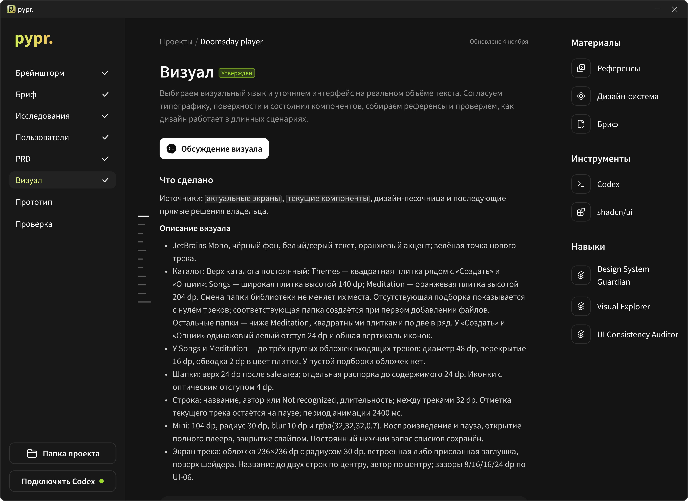
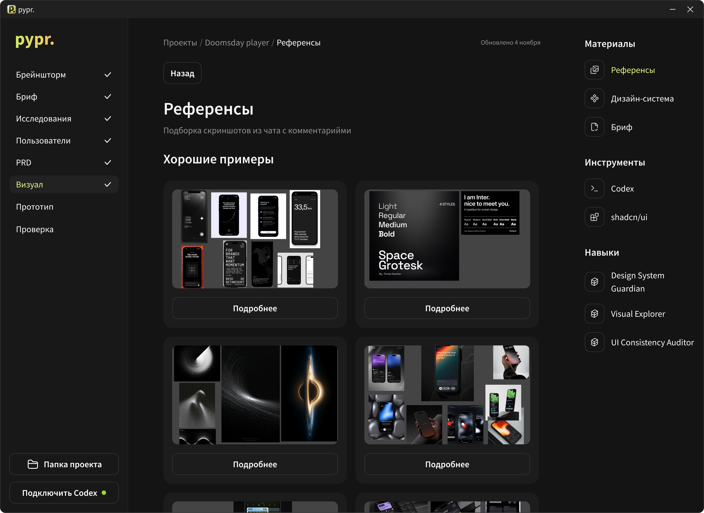
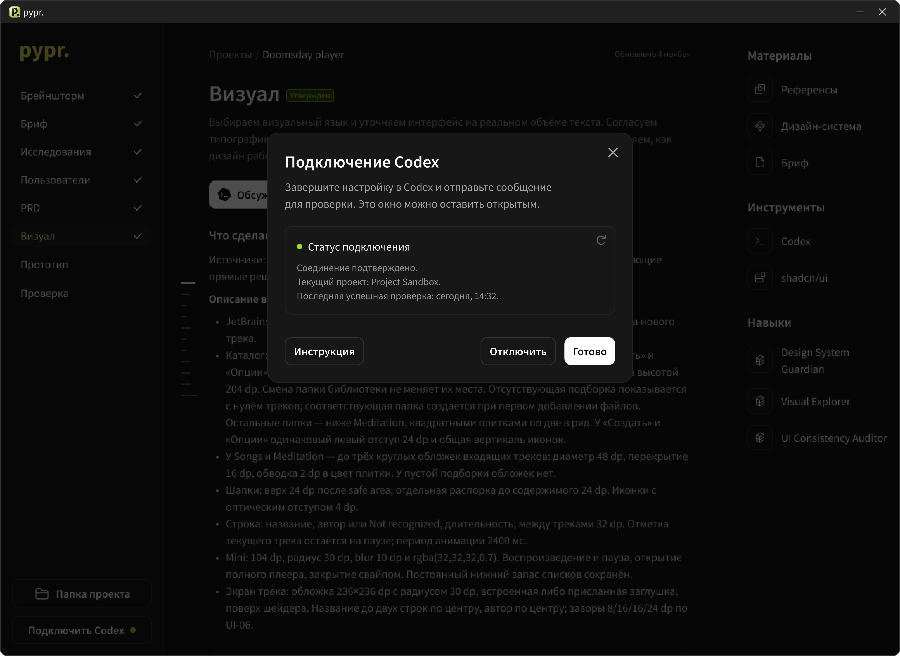
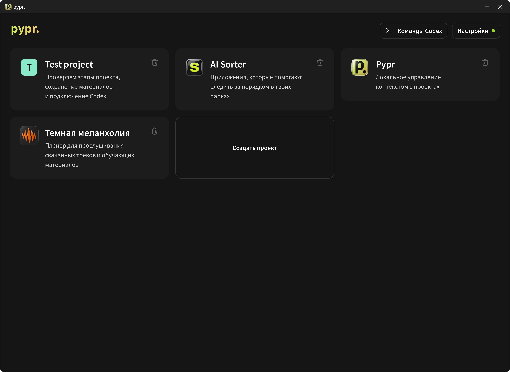
Преимущества системы управления контекстом
- Все хранится локально на моем компьютере без риска что-то потерять и это совершенно бесплатно
- Каждый этап имеет своего агента с детально прописанными агентскими правилами и скиллами
- Контекст проекта максимально сжимается до необходимого минимума
- Результаты не теряются в бесконечных чатах
- Легкость внесения правок за счет привязки конкретного чата к конкретному этапу реализации
Мой продукт — мои правила.
Никаких согласований
Я давно нуждался в музыкальном плеере с собственными подборками, который работает при отключении мобильного интернета, без рекомендательных алгоритмов и попыток угадать моё настроение. Надоел стремный дизайн известных стримингов, мне нужен был мой собственный стремный дизайн. Назвал плейер «Темная меланхолия».
- Только необходимые действия: воспроизведение, пауза, переключение треков и управление прогрессом
- Возможность зацикливать отрезок трека для лучшего усвоения образовательных аудио материалов
- Минималистичный дизайн с дефолтной темной темой с эстетикой терминала, бенто и небольшой старомодности
- Учтены исключительно мои паттерны поведения при проектировании UX.
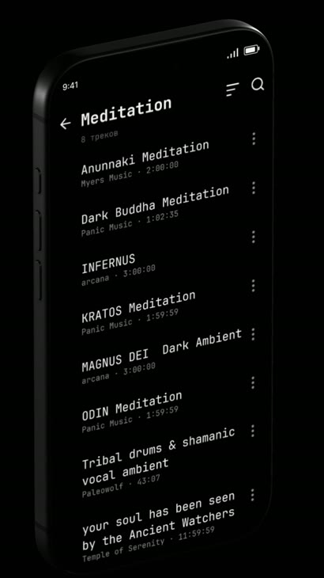
Несколько страниц плейера
Главный экран библиотеки спроектировал под длину своего большого пальца и частые сценарии. Самую популярную подборку сделал крупнее и выделил цветом.
Продукты, которые остались со мной
Месяц суперпогружения в AI-инструменты дал 6 реальных помощников, которыми я пользуюсь каждый день. Это не разовый эксперимент: видимо, новый стек уже стал частью моего рабочего ритма. Да, путь был через много итераций и бессонных ночей. Считаю, оно того стоило.
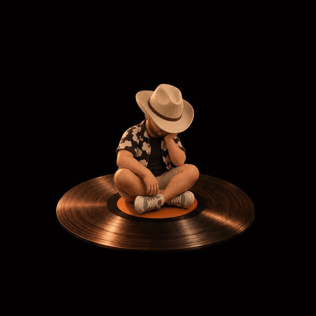